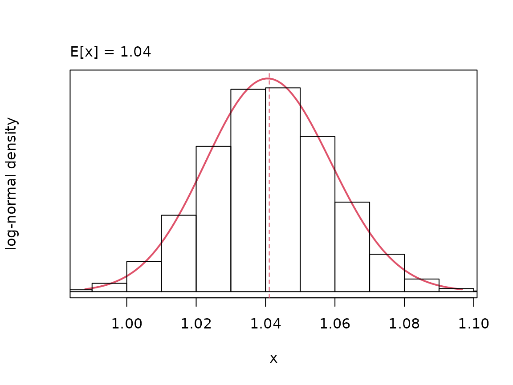
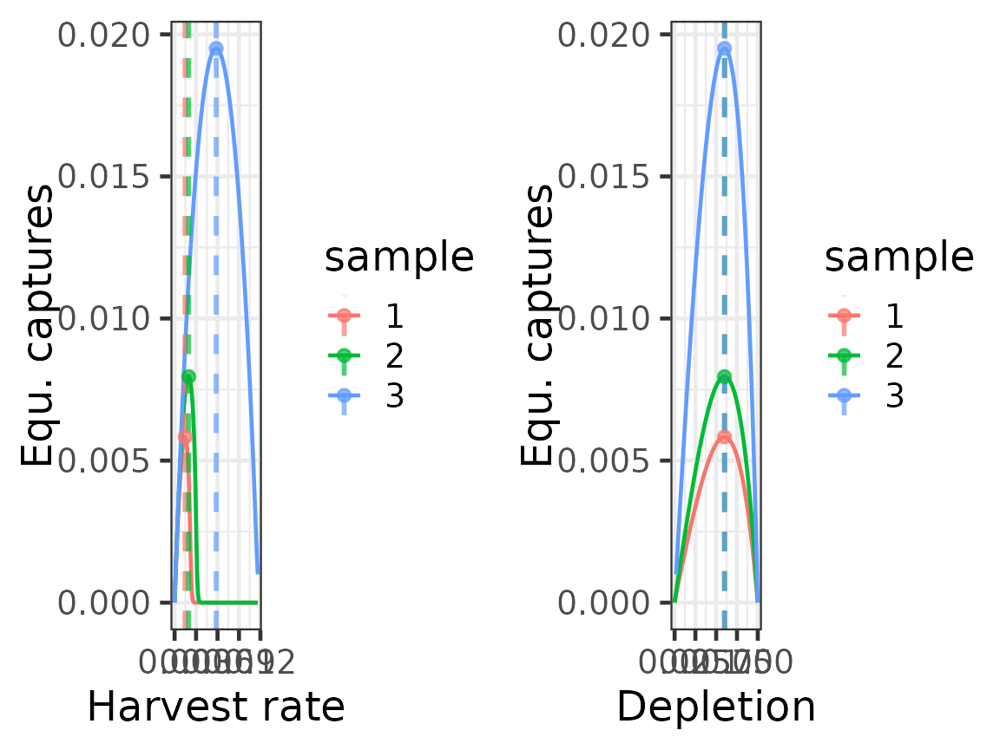
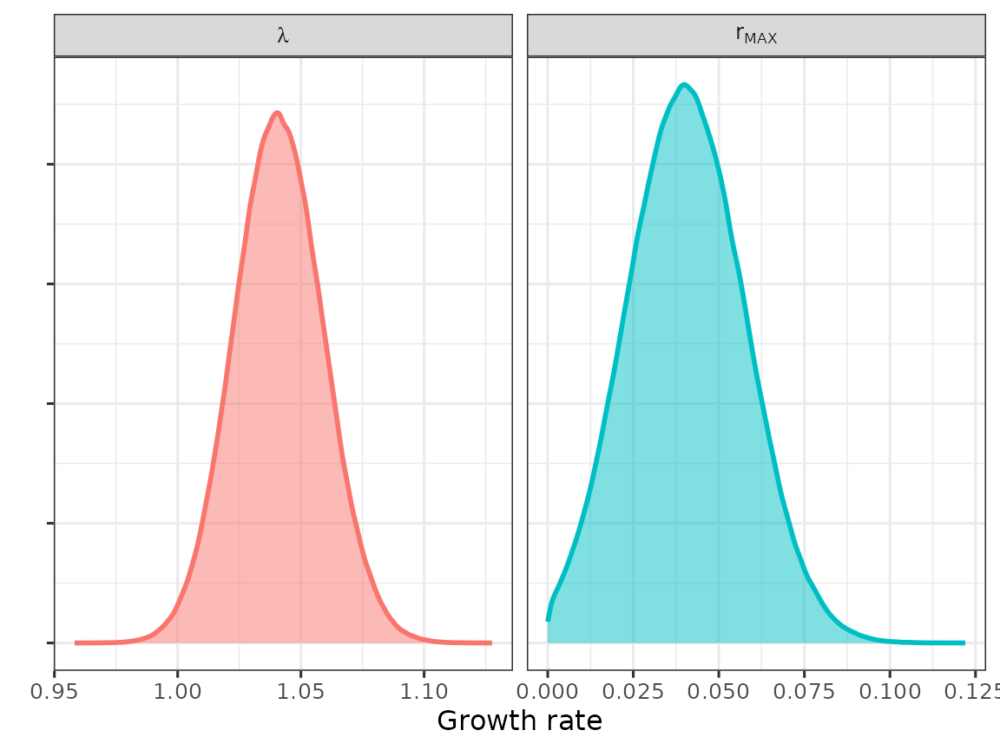
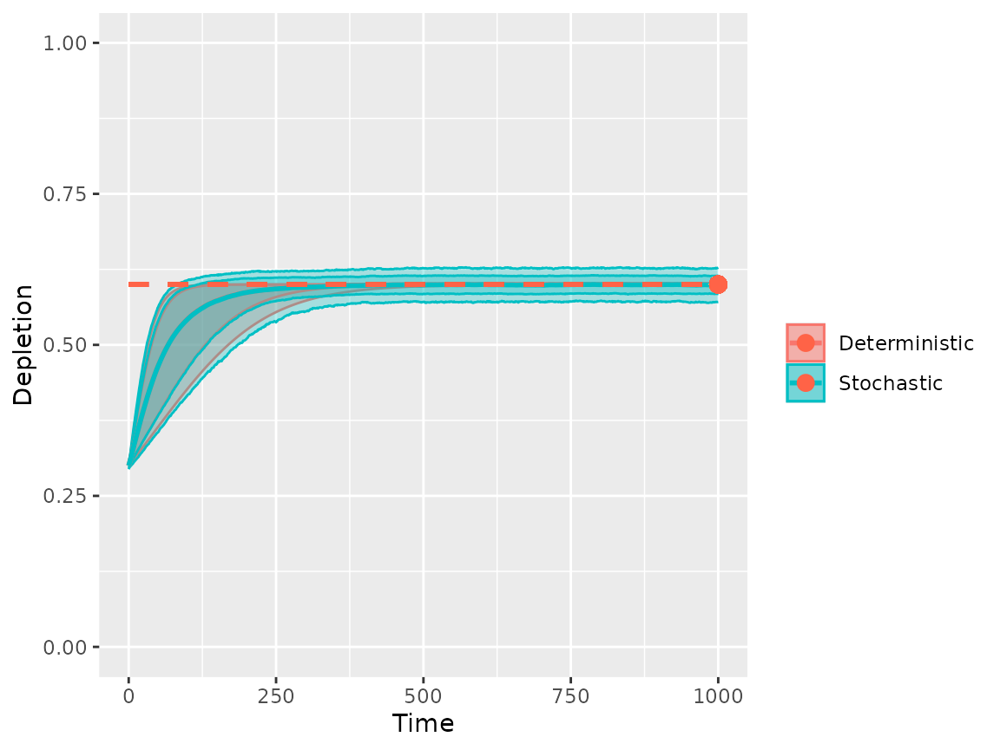

Operating model setup for Hector's dolphin
Charles T T Edwards, Jim O Roberts
20-Sep-2026
Source:vignettes/om_hdo.Rmd
om_hdo.Rmd
library(om)
#> Loading required package: RTMB
#> om version 0.3.3 (20-Sep-2026)
#>
#> Attaching package: 'om'
#> The following object is masked from 'package:base':
#>
#> sampleOperating model setup for Hector’s dolphin
# set-up
om_object <- om(ages = 0:12, samples = 30, time = 0:200)
#######################################
# calculate ref. points using lh pars #
# consistent with rmax #
#######################################
# get pars
s_pars <- as.numeric(unlist(logitnorm_pars(0.95, 0.2)[1:2]))
b_pars <- c(9.61, 13.86)
m_pars <- c(6, 8)
l_values <- 0.9
# load pars to calculate r
om_object <- om_object %>% load_pars(list(
# parametric sampling
's' = distribution(pars = s_pars, density = "logitnormal", name = "adult survivorship"),
'b' = distribution(pars = b_pars, density = "beta", name = "female fecundity"),
'm' = distribution(pars = m_pars, density = "int-uniform", name = "age at maturity"),
# non-parametric sampling
'l' = distribution(values = l_values, name = "age zero survivorship multiplier")
))
# check r
plot(lambda(om_object))
# assign r > 0 -> rmax
# (used to estimate the PST)
om_object <- om_object %>% load_rmax()
# assign selectivity
# (used to calculate MNPL)
om_object <- om_object %>% update_pars(list(
# parametric sampling
'v' = distribution(pars = m_pars, density = "int-uniform", name = "age at selectivity"),
'o' = distribution(pars = m_pars, density = "int-uniform", name = "age at observation")
))
# estimate ref. points
om_object <- om_object %>% shape(depletion = 0.6, stochastic = FALSE) %>% rp()
targets(om_object)$depletion
#> # A tibble: 30 × 2
#> sample value
#> <int> <dbl>
#> 1 1 0.600
#> 2 2 0.600
#> 3 3 0.600
#> 4 4 0.600
#> 5 5 0.600
#> 6 6 0.600
#> 7 7 0.600
#> 8 8 0.600
#> 9 9 0.600
#> 10 10 0.600
#> # ℹ 20 more rows
# plot surplus production function
# using sub-samples of life-history
# inputs
om_object_subsample <- om_object
samples(om_object_subsample) <- 3
dfr0 <- spf(om_object_subsample, harvest_rate = seq(0.00, max(om_object_subsample@targets$harvest_rate) * 2, length = 1001))
dfr1 <- bind_rows(targets(om_object_subsample), .id = "rp") %>% tidyr::pivot_wider(names_from = rp) %>% mutate(sample = as.character(sample))
gg1 <- ggplot(dfr0, aes(harvest_rate, captures, col = sample))
gg1 <- gg1 +
geom_line() +
labs(x = "Harvest rate", y = "Equ. captures") +
geom_vline(data = dfr1, aes(xintercept = harvest_rate, col = sample), alpha = 0.7, linewidth = 1, linetype = "dashed") +
geom_point(data = dfr1, aes(x = harvest_rate, y = captures, col = sample), alpha = 0.7, size = 2) +
theme_bw(base_size = 18)
gg2 <- ggplot(dfr0, aes(depletion, captures, col = sample))
gg2 <- gg2 +
geom_line() +
labs(x = "Depletion", y = "Equ. captures") +
geom_vline(data = dfr1, aes(xintercept = depletion, col = sample), alpha = 0.7, linewidth = 1, linetype = "dashed") +
geom_point(data = dfr1, aes(x = depletion, y = captures, col = sample), alpha = 0.7, size = 2) +
theme_bw(base_size = 18)
gg <- ggarrange(gg1, gg2, ncol = 2)
print(gg)
# plot lambda and rmax
dfr <- bind_rows(data.frame(value = exp(sample(om_object@pars$r, size = 1e6)), par = "lambda"), data.frame(value = sample(om_object@pars$rmax, size = 1e6), par = "r[MAX]"))
gg <- ggplot(dfr) +
geom_density(aes(x = value, fill = par, col = par), linewidth = 1, alpha = 0.5) +
facet_wrap(~par, labeller = label_parsed, scales = "free_x") +
theme_bw(base_size = 12) + theme(axis.text.y = element_blank()) +
labs(x = "Growth rate", y = "", fill = "", col = "") +
guides(fill = "none", col = "none")
print(gg)
# load default uncertainty
om_object <- om_object %>% load_cvs(list(
'survivorship' = 0.05,
'birth' = 0.01,
'numbers' = 0.00,
'capture' = 0.00)
)
om_object <- om_object %>% load_quantiles(list(
'numbers' = 0.00)
)
# test equilibrium population dynamics
om_object_proj1 <- pdyn(om_object, stochastic = FALSE, initial_depletion = 0.3, time = 1000)
om_object_proj2 <- pdyn(om_object, stochastic = TRUE, initial_depletion = 0.3, time = 1000, iterations = 100)
gg <- dynplot(om_object_proj1, om_object_proj2, labels = c("Deterministic", "Stochastic"))
gg <- gg +
geom_segment(x = 0, xend = max(om_object_proj1@time), y = mean(targets(om_object_proj1)$depletion$value), col = "tomato", linetype = "dashed", linewidth = 1) +
geom_point(x = max(om_object_proj1@time), y = mean(targets(om_object_proj1)$depletion$value), col = "tomato", size = 3) +
labs(x = "Time", y = "Depletion", col = "", fill = "") +
scale_y_continuous(limits = c(0, 1))
print(gg)